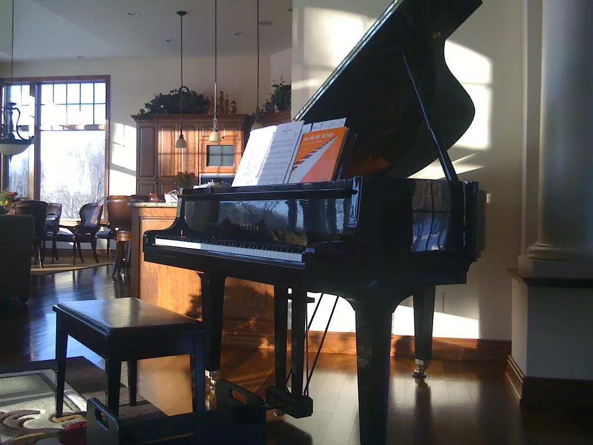
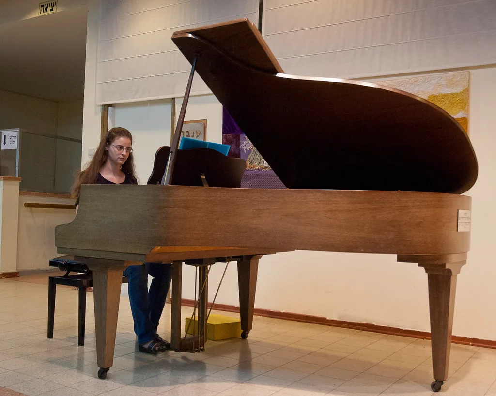

피아니스트 조성진, '키아프 서울 2026' 특별 공연
피아니스트 조성진이 국내 최대 규모 아트페어인 '키아프 서울 2026' 무대에 오른다. 오는 9월 2일부터 6일까지 열리는 키아프 서울 2026은 미술과 음악의 접점을 넓히는 클래식 공연 프로그램 'Kiaf Classic(키아프 클래식)'을 올해 새롭게 선보이는데, 그 중심에 조성진의 특별 공연이 자리한다. 미술 축제의 한복판에서 세계 정상급 피아니스트의 연주를 만날 수 있게 된 것이다.
조성진의 특별 공연 '키아프 클래식: 조성진과 함께하는 공존의 울림'은 9월 4일 코엑스 오디토리움에서 열린다. 쇼팽 국제 콩쿠르 우승 이후 세계 무대에서 활약해 온 조성진은 국내에서 공연 티켓을 구하기 가장 어려운 클래식 연주자로 꼽히는 만큼, 이번 공연 역시 뜨거운 관심이 예상된다.

키아프 서울은 한국화랑협회가 주최하는 국내 대표 아트페어로, 매년 9월 서울 코엑스에서 열리며 국내외 갤러리와 컬렉터, 미술 애호가들이 대거 모여드는 미술 시장의 최대 행사다. 최근 몇 년 사이 서울이 아시아 미술 시장의 새로운 허브로 부상하면서 키아프의 국제적 위상도 함께 높아졌다.
이런 미술 축제가 클래식 음악 프로그램을 정식으로 도입한 것은 장르 간 경계를 허무는 최근 문화계 흐름과 맞닿아 있다. 시각예술과 공연예술을 한 공간에서 함께 즐기도록 해 관람 경험을 확장하고, 미술 관객과 클래식 관객이 서로의 영역을 넘나들게 하려는 시도다. 해외 주요 아트페어에서도 음악 공연이나 퍼포먼스를 결합하는 사례가 늘고 있다.

'공존의 울림'이라는 공연 제목처럼, 이번 무대는 미술과 음악이라는 서로 다른 예술 장르가 한 공간에서 어우러지는 상징적인 자리가 될 전망이다. 아트페어를 찾은 관람객들은 낮에는 전 세계 갤러리가 들고 온 작품들을 감상하고, 저녁에는 조성진의 피아노 선율을 만나는 특별한 하루를 보낼 수 있게 된다.
문화계에서는 이번 협업이 성공적으로 안착할 경우, 미술 축제와 공연예술의 결합이 하나의 정례 프로그램으로 자리 잡을 수 있을 것으로 기대하고 있다. 장르를 넘나드는 기획이 관객층을 넓히고 문화 소비의 저변을 확대하는 계기가 될지 주목된다.